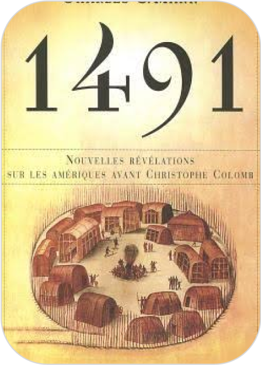

The Guns Of August
Selected by the Modern Library as one of the 100 best nonfiction books of all timeThe Proud Tower, the Pulitzer Prize–winning The Guns of August, and The Zimmerman Telegram comprise Barbara W. Tuchman’s classic histories of the First World War eraIn this landmark, Pulitzer Prize–winning account, renowned historian Barbara W. Tuchman re-creates the first month of World War I: thirty days in the summer of 1914 that determined the course of the conflict, the century, and ultimately our present world. Beginning with the funeral of Edward VII, Tuchman traces each step that led to the inevitable clash. And inevitable it was, with all sides plotting their war for a generation. Dizzyingly comprehensive and spectacularly portrayed with her famous talent for evoking the characters of the war’s key players, Tuchman’s magnum opus is a classic for the ages.Praise for The Guns of August“A brilliant piece of military history which proves up to the hilt the force of Winston Churchill’s statement that the first month of World War I was ‘a drama never surpassed.’”—Newsweek“More dramatic than fiction . . . a magnificent narrative—beautifully organized, elegantly phrased, skillfully paced and sustained.”—Chicago Tribune“A fine demonstration that with sufficient art rather specialized history can be raised to the level of literature.”—The New York Times“[The Guns of August] has a vitality that transcends its narrative virtues, which are considerable, and its feel for characterizations, which is excellent.”—The Wall Street Journal
Add to chart
Buy 20§
Mybook
Home Categories Contact 


Allah loves
The islam book...

The proudest blue


The Guns Of August

1491 : Nouvelles Ré...
The Wager: A T...
+213556565650
Mybook@gmail.com


Follow us